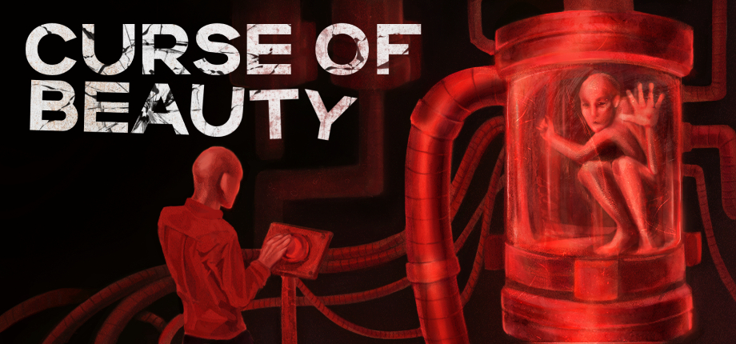
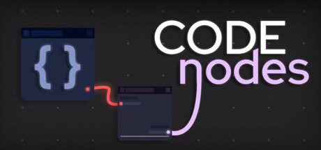
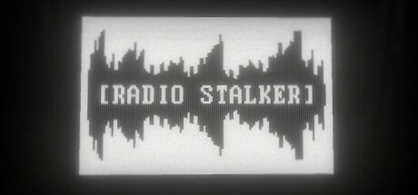
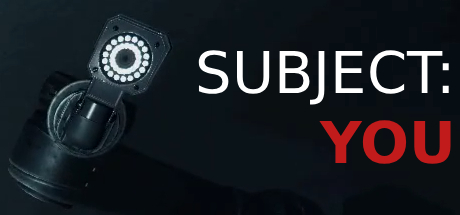
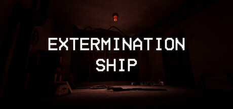
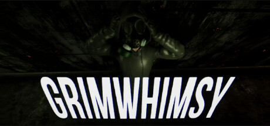
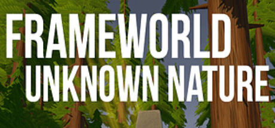
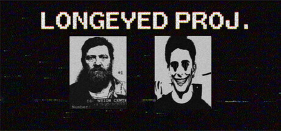
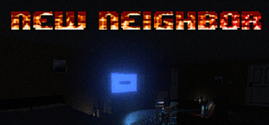
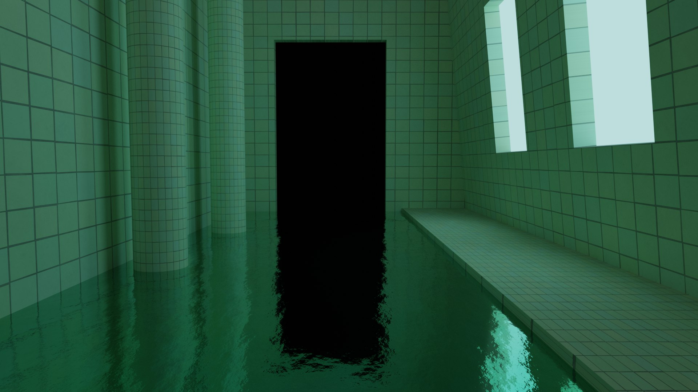

VOLODYMYR ZHYHAILO / INDIE GAME DEVELOPER
wadishTheCreator.
One creator. Two sides.
Games, worlds, and a little piece of me.
Liminal spaces
01 / COPIES SOLD
8,000+Games in your hands
02 / VIEWS ACROSS PLATFORMS
16,500,000+A whole lot of eyes on my worlds
03 / YEARS OF EXPERIENCE
7Making things since 2019
Which side of me would you like to see?
Horror on one side. Something softer on the other.
You can switch sides anytime using Dark / Cute above.
GAMES & 3D ART
Dark side.7
My horror games and darker worlds. Pick a project to see more.

01Curse of Beauty
Psychological horror about beauty, creation, and an endless cycle of orders.
Open projectJUST TYPE
A small typing game. Chase a new record, or slow down and enjoy the rhythm.
Open project
03Code Nodes
An idle programming game built around learning by doing.
Open project
04RADIO STALKER
Psychological horror. Obsession, isolation, and a world that feels wrong.
Open project
05Subject: YOU
An experimental horror game where an AI judge decides your fate.
Open project
06EXTERMINATION SHIP
A collaborative project: building the spaces aboard the ship.
Open project
07GrimWhimsy
Co-op horror with procedural worlds and unusual creatures.
Open project
08FRAME WORLD
A photography journey through an unfamiliar, quiet world.
Open project
09LONGEYED PROJ.
My first commercial release. Analog horror, made in two weeks.
Open project
10New Neighbor
Where it started: my first released game, a motel mystery.
Open project
11Liminal spaces
Exploring emptiness and atmosphere through Blender renders.
Open projectPROJECT NOTES / GAMES
JUST TYPE (2026)
This one is a bit different from my usual horror projects. JUST TYPE is a small typing game where you can push your speed and accuracy, or simply put on some music and enjoy typing. No monsters this time, just you and the next word.
There are different modes and word sets, Steam leaderboards, and a profile that keeps track of your progress. You can also change the colors and typing sounds. To be honest, sometimes chasing a better result is fun, but sometimes it is enough to just type.
View JUST TYPE on Steam ↗7 screenshots. Click any image to open it full size.
BEHIND THE WORK
Hi, I'm Volodymyr.
You can call me wadish.
An indie game developer drawn to psychological horror, strange places, and the way games make us feel.
I also go by wadishTheCreator and VLighter. My work spans independently developed games, collaborations, and experiments in programming and 3D art.
From my first release, New Neighbor, to my current projects, this portfolio brings together the games and the process behind them: early sketches, in-engine screenshots, and lessons learned along the way.
Explore my projects ↗PROJECT NOTES / GAMES
RADIO STALKER (2024-2025)
RADIO STALKER is a game that is a bit hard to explain, it is something that must be felt, because it is a psychological horror. The plot was that the main character was obsessed with the idea of becoming the most popular "radio stalker" on the website for stalkers. His wife left him and took the kids, the bills are not paid, and his mental problems are getting worse...
The key idea is to make the player feel uncomfortable and to show the depression of the main character and all the dark feelings of this in-game world. To be honest, this game is a long-term project because it has and requires a lot of advanced technical skills and heavy systems. One of the photos shows work sketches, and a GIF shows the result in the game engine.
PROJECT NOTES / GAMES
Code Nodes (2026)
Another experimental game. It's not exactly my style, I usually make horror/psychological horror games, but this is an idle game designed to teach people programming in a custom pseudo-language, "LearnM," created specifically for this game by a friend and me. The key feature of "LearnM" is that it's very similar to JS, C#, C, and C++, so once players master it, learning a real programming language won't be a big deal.
I must say I was inspired by another game, but now I'm making not just an idle game, but an educational one. For me, the most challenging part of this project is the visual component, as I'm having some trouble with the 2D design. Another challenging part is how to come up with the idea of "how to teach" in the game. But this is the part that I will not tell because the game is still WIP.
PROJECT NOTES / GAMES
Curse of Beauty (2027)(soon)
Another Experimental Project: Psychological Horror. To make a long story short, the premise of the game is that the main character is a monster-creature, whose sole purpose in life is to create cosmetics from other creatures. He accomplishes this by killing them and extracting fats, wastes, blood, dyes, and plastic, ultimately producing items like foundation cream. The character receives orders that he must complete, or else he faces execution.
However, he suffers greatly because of his weak monster body, the pain of being confined to his room, and the burden of having an endless cycle of orders to fulfill. I have poured all my knowledge from seven years of game development, my experiences, and my design skills into this project. I am truly proud of what is coming together.
Click any image to view details
PROJECT NOTES / GAMES
EXTERMINATION SHIP (2024)
This game is the result of my collaboration with two other talented developers. "Extermination Ship" is a horror game set in a post-apocalyptic world where the government has decided to exterminate half of humanity by putting them on a ship called the "Doomsday Ark" to be killed in the ocean, but hasn't told the people about it. The main character, an engineer, is the only one who knows the truth. Over the course of the game, he goes crazy.
This game doesn't have a happy ending, all endings lead to the protagonist's death. I, for my part, improved the visuals of the project thanks to my experience, and many of the core mechanics were created and developed by me. The game is still in development.
PROJECT NOTES / GAMES
LONGEYED PROJ. (2022)
This is my first commercial game that was released. In 2022, when Russia invaded Ukraine, I was looking for something that would help me not think about war. Back in those days, "The Mandela Catalogue" was popular, and I thought, what if I try to create something similar, but a game.
The game was created in 2 weeks, with zero budget. All voice acting, which is not as good as I wanted, was made for free by volunteers. The game was primarily developed based on references, so unfortunately, there are no sketches or other materials that could illustrate the work process.
PROJECT NOTES / GAMES
Subject: YOU (2025)
This is an experimental project. Thanks to the new skills I've acquired over time, I'm creating games - new techniques were applied during the development process. Unfortunately, I don't have a motion capture suit, so I bought ready-made animations for the animation. The plot is as follows: the main character is accused of crimes, but has no memory of what he did because he has severe mental issues. He ends up in a new judicial system with an AI handling his case. As he answers the AI judge's questions, he begins to see monsters and hallucinations.
The project is currently on hold, but I'll definitely return to it. The main experiment in this project is to try to put pressure on the player and play on this feeling.
Click any image to view details
PROJECT NOTES / GAMES
FRAME WORLD: UNKNOWN NATURE. (2023)
This was my second try at creating a 3D game. The main idea was to create a relaxing game and collaborate with musicians to create meditative music. The story was about a professional photographer whose work went unappreciated at his latest exhibition. Depressed, he leaves everything behind to explore an unknown nature, a place where no one has been before him. His mission was to capture fascinating photos of the local places.
However, I realised that I still lacked the skills to make the game feel engaging, and players often complained that they didn't know what to do. While I am still proud of this game, it is still a noticeable step backward after the hype of "LONGEYED PROJ."
Click any image to view details
PROJECT NOTES / ART
BLENDER Art Works
To be honest, I am a very weak user of BLENDER, and I think that's a good sign for me that there is always room to grow. The presented images show my work in the Liminal Space atmosphere, which I am passionate about. Sadly, all the renders from BLENDER that I had while studying at "IT STEP Academy" are now lost through time.
The main concept of each image is to convey a feeling of emptiness and show what places where you usually see a lot of people look like when there is no one at all.
Click any image to view details
PROJECT NOTES / GAMES
GrimWhimsy (canceled)
I was developing this game with my friend in 2024. We had a total budget of $800. It will be a shame not to point out how much this project taught me, beginning with creative coding and ending with creative and critical thinking. For example, this game was online, so that means I needed to somehow synchronise whole scenes between 2-4 players, which was a real challenge. Or another case - procedurally generating a maze map for players.
Also, this game required a lot of unique visual ideas and gameplay ideas, such as a ventilation-head monster or a health-kit that can explode with 50% chance. For some reasons which I can't disclose, the project is canceled.
PROJECT NOTES / GAMES
New Neighbor (2022)
New Neighbor is my first-ever released game, which I launched for free on itch.io just before Russia invaded Ukraine in 2022. It’s a 3D horror game centered around a mysterious neighbor in a motel.
However, due to my limited technical skills at the time, the game suffered from poor optimization, preventing me from fully realizing my ideas. Currently, the game is hidden on itch.io because I feel a bit shy to leave it public.
Click any image to view details
Find me elsewhere.
Follow my projects, releases, experiments, and development updates across the main platforms.
You may notice that not all of the games I mentioned earlier are publicly available or listed on one of these resources. That is normal. Not every game has been released or published yet.